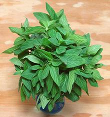

SAFARI
Users
General & History
Mints
(Lamiaceae Mentha) are native to every continent, except Central and South America, and Antarctica. They are almost all perennials, and most prefer moist soil and plenty of sun. They are easy to tell from similar looking plants by their square stems. This herb is considered particularly good with lamb, and it's very popular in Anatolia, the Levant and Middle East, both fresh and dried.Growing Mints:
Mint is not difficult to grow, but is usually grown in a container, for one of two reasons: 1) to keep it from trying to take over the world; 2) because the local soil doesn't have enough moisture. These two reasons are mutually exclusive. You can find a comprehensive article on growing mint at Gardener's Path.Varieties
Spearmint
 [Spear Mint; Rau Hung (Viet); Mentha spicata alt
Mentha cordifolia]
[Spear Mint; Rau Hung (Viet); Mentha spicata alt
Mentha cordifolia]
This mint originated in Europe or southwest Asia, but exactly where is
uncertain since it has been cultivated since prehistoric times. Named
"spear" for it's pointy spearhead shaped leaves, it is the most common
mint sold fresh and is the mint to use if the recipe just calls for
"mint". It is a robust grower under many conditions of sun or shade
but does need moisture. It is often grown in containers because it is
an aggressive spreader, and is considered a troublesome invasive in
the US Great Lakes region.
Dried Mint
[Mentha spicata alt Mentha cordifolia]
Dried mint is not a good substitute for fresh mint, or vice versa, but
it does hold its own as a flavoring due to the high content of aromatic
oils. In Turkish cuisine, dried mint is generally used more than fresh.
Dried mint is generally made from the large, fast growing spearmint
varieties.
Vietnamese Mint / Scotch Spearmint

[Rau Hung Cay (Viet); Gingermint; Scotchmint (UK); Mentha x gracilis]
This mint is a naturally occurring sterile hybrid of Spearmint and Field Mint (M. arvensis). It is used in Vietnam for herb plates and in Pho. The leaves are thinner and more delicate than Spearmint, and it has a bit of Peppermint bite. The leaves are typically up to 2-3/4 inches long.
The world center for growing this mint is the U.S. Pacific Northwest,
Wisconsin and Idaho, with smaller production in Alberta and Saskatchewan,
Canada. The North American production is used almost entirely for
processing into mint flavors for chewing gum, candies, and as a rat
repellant. The photo specimens were purchased from a large Chinese /
Vietnamese market in Los Angeles (San Gabriel) for 2016 US $1.09 for
2-1/2 ounces.
Peppermint
[Mentha x piperita alt M. balsamea Wild]
This mint is a natural hybrid of M. aquatica and M. spicata and is sometimes found wild where those mints grow in close proximity. It is sterile so propagated is by division of the root rhizomes, and it is now cultivated worldwide. In the US Great Lakes region it is considered an aggressive invasive, spreading by runners.
Because of its high menthol content peppermint is used in herb teas
and as a flavoring for all kinds of confections and in cosmetic, medicinal
and hair care products. Archaeological evidence indicates it has been in
use as a medicinal for at least 10,000 years. Because it relaxes the
gastro-esophageal sphincter, peppermint is a good medication to take
before entering a belching contest.
Photo © Simon Eugster distributed under license Creative
Commons
Attribution-ShareAlike 3.0 Unported.
Chocolate Mint
[Mentha x piperita]
This mint is a small leaved cultivar of Peppermint that has a flavor quite
reminiscent of mint flavored chocolate candies. It is a favored flavoring
for chocolate cakes, chocolate drinks and many other chocolate recipes. It
is also often used in coffee, and can be used dried. Like other peppermints
it is sterile and propagated by dividing the root rhizomes. It is often
grown in containers because it is an aggressive spreader.
Penyroyal
[Mentha pulegium]
This mint, native to Europe, has a strong fragrance similar to spearmint, but its usage is rather different. The ancient Greeks and Romans used it as a culinary herb and it was so used in the Middle Ages, but then fell out of the kitchen repertory. It is still used in some herb teas and is said to settle the stomach, but sparingly due to it's high toxicity.
Pennyroyal is a noted and effective abortifacient, but must be used with
great care because too much can be fatal. It is also toxic to the liver.
Pennyroyal oil. often used to deter pests, is highly toxic and should never
be used internally on pain of death. It should not be used where pets might
be exposed to it as it is deadly to them even at very low levels.
Photo by Raffi Kojian distributed under license Creative
Commons
Attribution 3.0 Unported